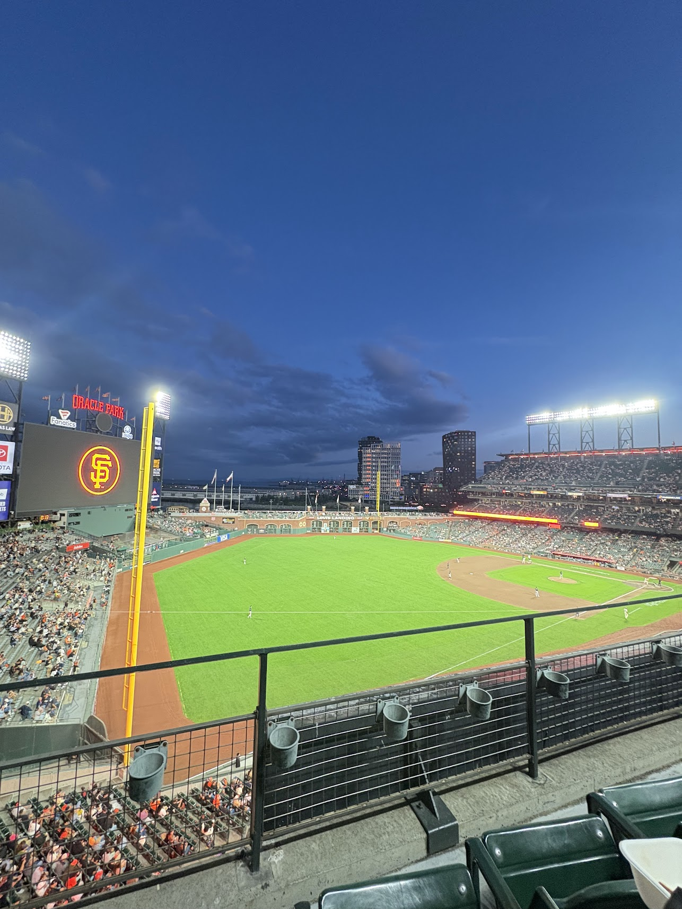

Going to a SF Giants Game
October 15, 2025
I went to multiple SF Giants game during the summer and it was pretty fun! Oracle Park is known for it's food, so of course I had to try them all. Some notable foods were the crab sandwich, clam chowder, garlic fries, nachos, and Ghiradelli sundae. This particular photo was when the Giants played the Diamondbacks and won 11-5. Go Giants!